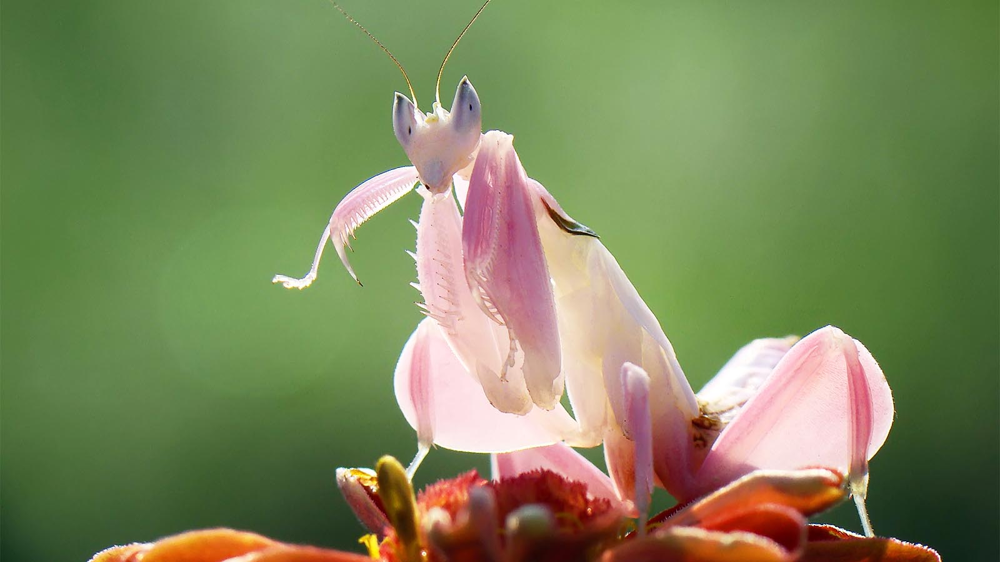
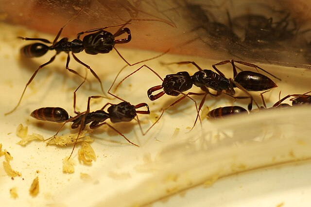

Mini Galeria

Jumping Spider (Skakun)

Elephant Beetle (Chrząszcz Słoń)

Leafcutter Ant (Mrówka Liściarka)

Orchid Mantis (Modliszka Orchidea)

Silk Moth (Jedwabnik)

Trap-Jaw Ant (Mrówka Pułapkowa)

Weaver Ants (Mrówki Tkacze)